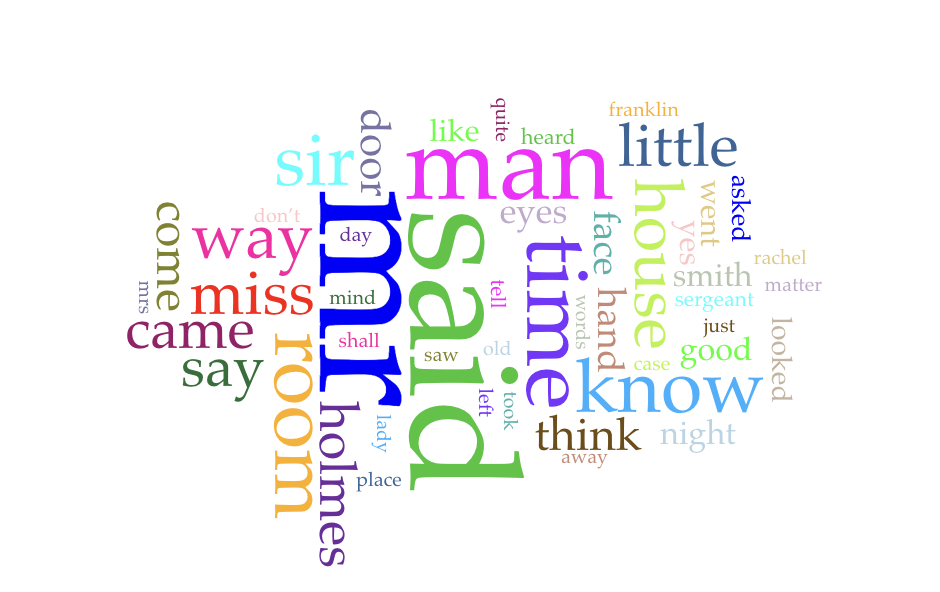

Dear Data
"Dear Data" is a project where two designers, Giorgia Lupi and Stefanie Posavec, sent each other postcards every
week for a year. Each postcard had a hand-drawn data visualization based on things from their daily lives. This project showed how personal data can be turned into art.
Learn more about the project here.
For this assignment, I explored the "Dear Data" website, looked at the different visualizations, and made my own postcard based on my own data. I tracked how frequently I drank anything and for what reason I drank it.
My Dear Data Postcard
Text Analysis: The Hound of the Baskervilles
This project used digital humanities tools to analyze the first two chapters of Arthur Conan Doyle’s The Hound of the Baskervilles. I marked up the text using XML to identify key characters, objects, and concepts. Then I used Voyant Tools to look at trends across a larger corpus of mystery novels.
Encoding the text helped me understand how structure and repetition work in storytelling, while Voyant revealed patterns in word frequency and theme that I wouldn’t have noticed otherwise.
View Full Analysis

Click the image to read the full analysis